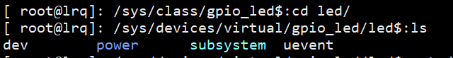
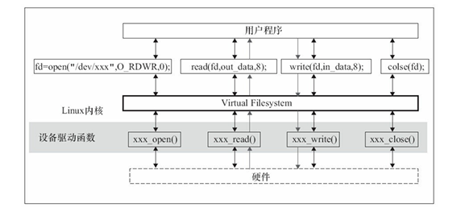
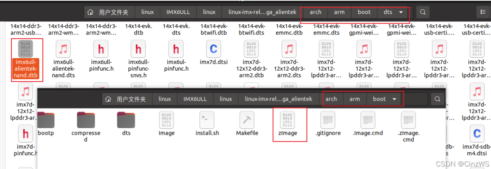

01 驱动开发概述
Linux驱动开发概述
简介
Linux驱动开发是设备驱动模型、驱动子系统、内核基础设施三者的深度整合：
- 设备驱动模型提供通用框架，实现驱动与设备的匹配
- 各个子系统实现垂直领域优化（如输入、存储、网络）
- 内核设施与硬件操作解决并发、内存、中断等底层问题
驱动开发子系统
定义
子系统是指针对特定功能领域或硬件类型设计的软件框架。其核心目标是解耦硬件差异，提供统一的API，使得驱动开发者无需直接操作底层寄存器或硬件细节，而是通过标准化API完成功能开发
所有的驱动子系统的实现均遵循分层架构原则
用户接口层：通过
sysfs或/dev节点提供控制接口核心层：实现事件队列、资源分配等通用逻辑
硬件驱动层：厂商实现具体寄存器操作
1 | 用户空间 |
以GPIO子系统为例：
- 用户接口层：通过
/sys/class/gpio或ioctl()访问 - 子系统核心层：定义
struct gpio_chip抽象接口 - 设备驱动层：厂商实现具体操作（如
gpio_ops->set_value()）
再以input子系统为例：
- 用户接口层：向应用层提供
/dev/input/eventX统一接口 - 子系统核心层：实现事件队列管理、设备注册等通用逻辑
- 设备驱动层：实现与硬件交互（如通过中断读取输入…）
分类
- 核心硬件接口类：直接操作SoC底层资源（GPIO、时钟、中断），需与硬件寄存器交互
- 总线通信类：管理物理/虚拟总线协议（I2C、SPI、USB），实现设备枚举与数据传输
- 设备管理类：抽象特定功能设备（LED、input、MISC），提供标准事件接口
- 显示与存储类：处理图形渲染（DRM）和块设备（MMC）的高性能需求
- 网络与电源类：面向系统级功能（网络通信、能耗优化）
sysfs路径差异解析
| sysfs路径类型 | 对应子系统特征 | 示例 |
|---|---|---|
/sys/class/ |
功能导向的设备类，用户空间通过文件接口直接控制设备 | LED、GPIO、Input |
/sys/bus/ |
总线管理类子系统，负责设备与驱动的动态匹配 | I2C、SPI、USB、platform |
/sys/devices/ |
物理设备树结构映射，反映硬件实际连接拓扑（如SoC内部外设） | platform_device、PCI设备 |
| 无独立sysfs路径 | 提供基础设施支持的子系统（如Regmap、中断核心），不直接暴露用户接口 | Regmap、DMA引擎 |
硬件设备的分类
Linux驱动开发根据设备的类型可以分为3类：
- 字符设备：字符设备是以字节为单位进行读写的设备，此类设备按字节的顺序依次对字节流中的数据进行操作，比如LED、按键、SPI、IIC、LCD等
- 块设备：以存储块为基本操作单位的设备，存储类设备都为块设备，比如SD卡、EMMC、NAND FLASH、U盘等
- 网络设备：不管是有线还是无线，与网络相关的设备都是网络设备
一个设备可能同时属于多个种类，比如既是字符设备，又是网络设备
Linux内核模块
虽然Linux属于单内核OS，但可以通过动态加载/卸载内核模块的形式修改OS提供的功能。而驱动开发本质上也是内核开发，所以需要使用内核模块的开发方式。
Linux的设备驱动有2种运行方式：
- 1.将驱动编译进内核，这样当Linux内核启动时将自动运行设备驱动程序
- 2.将驱动程序编译成内核模块
.ko文件，在Linux内核启动后使用相应命令加载驱动模块
通常在调试的时候使用第2种方式，这样在修改驱动时只需要修改驱动的代码，而不用重新编译整个内核并重启
模块的加载、卸载行为一般用以下函数进行注册：
1 | module_init(xxx_init); //注册模块加载函数 |
module_init()函数用来向 Linux 内核注册一个模块加载函数，参数xxx_init就是需要注册的具体函数，当使用insmod命令加载驱动的时候，xxx_init这个函数就会被调用module_exit()函数用来向 Linux 内核注册一个模块卸载函数，参数xxx_exit就是需要注册的具体函数，当使用rmmod命令卸载具体驱动的时候xxx_exit函数就会被调用
模块的加载
模块的加载可以使用以下2个命令：
insmod：该命令不能解决依赖关系，比如要先加载模块A，再加载B，直接insmod B会出问题modprobe（推荐使用）：该命令会分析模块的依赖关系，将到/lib/modules/<kernel-version>目录查找所有涉及的模块，将其都加入内核
加载完毕后，可以通过
lsmod命令查看系统中存在的驱动模块可以通过
cat /proc/devices查看系统存在的设备
模块的卸载
模块的卸载可以使用以下2个命令：
rmmodmodprobe -r：将同时卸载掉该模块所依赖的模块
设备节点的创建
在加载了设备驱动内核模块后，通常不会立即就在/dev路径下生成一个设备节点，需要手动/自动创建
手动创建
使用mknod 命令
比如：创建/dev/led这个设备节点，主设备号为200，从设备号为0
1 | mknod /dev/led c 200 0 |
自动创建
Linux中有个叫udev的==用户程序==，可以通过netlink套接字接收内核检测到的设备热拔插事件而发送的uevent从而动态创建/删除/dev目录中的设备节点（具体参考Linux设备开发详解的5.4节）
比如用户通过
insmod装载一个驱动后，udev就可以在/dev自动创建一个设备节点在嵌入式Linux中，Busy Box提供了一个叫
mdev的程序，有类似的作用，可以自动创建和删除设备节点文件，并支持热拔插设备的管理，其工作原理如下：- 初始化：mdev通过扫描
/sys/class和/sys/block目录下的设备信息，查找包含“dev”文件且设备号有效的目录

- 创建设备节点：当检测到符合条件的设备时，mdev会调用
mknod函数在/dev目录下创建对应的设备节点文件。 - 动态更新：mdev支持热插拔事件，当设备插入或移除时，能够自动更新
/dev目录中的设备节点。 - 配置文件：mdev的配置通过
/etc/mdev.conf文件实现，该文件定义了匹配规则和执行的动作（如挂载U盘、设置权限等）
- 初始化：mdev通过扫描
但是有了这个工具还不够，在代码中也要进行相应的修改才能实现自动创建设备节点文件，主要用到了
class和device结构体及相应函数
具体步骤也很简单，只需要在驱动的入口出分别创建class和device的实例就可以了
1 | void led_probe() |
Linux如何操作硬件设备
Linux可以通过一下3种方式和硬件设备进行交互：
/dev下的设备节点文件/sys/proc
对设备节点进行I/O操作
在应用层最常见的控制硬件的手段应该就是对/dev/目录下的设备节点文件进行I/O操作了。对于每个设备节点文件，其对应的驱动中都会定义对该类型设备对应的文件进行I/O操作的具体实现
- 通过I/O操作来控制硬件的具体流程如下：

- 注意：I/O系统调用直接交互对象不是驱动，而是VFS
注意事项
1.不管使用哪种方式，都要确保编译驱动时使用的内核源码和系统镜像使用的内核的版本是一致的，不然驱动会无法使用，如果不一致，把新的zImage放到tftpboot文件夹下就行了
可以使用
uname -r来查看系统的内核版本
编译得到的系统镜像和设备树文件的位置：
